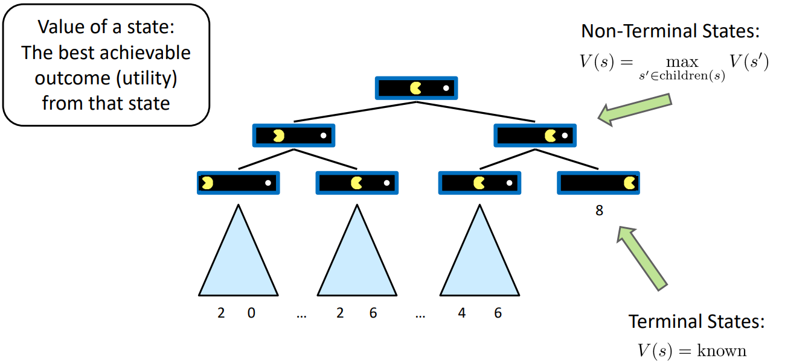
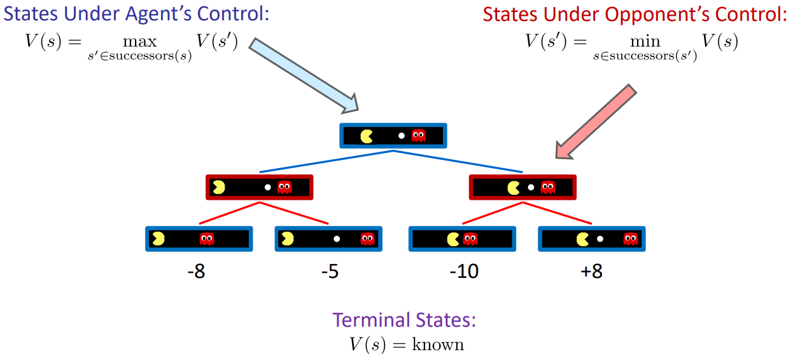
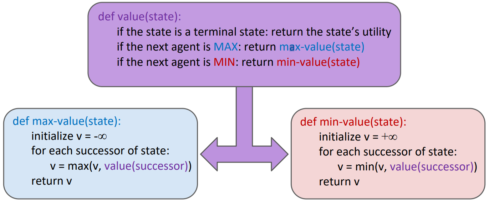
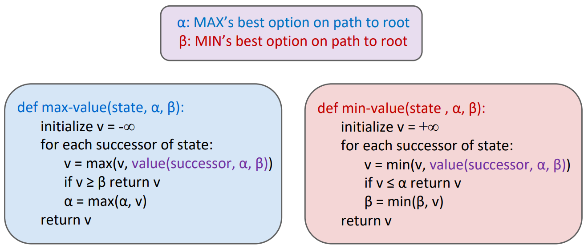
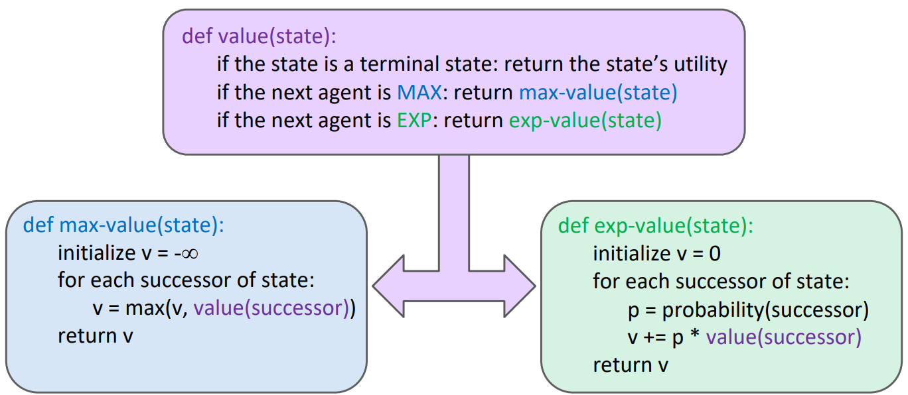
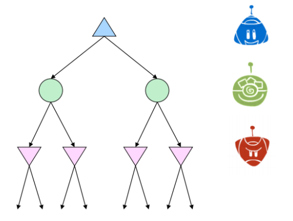
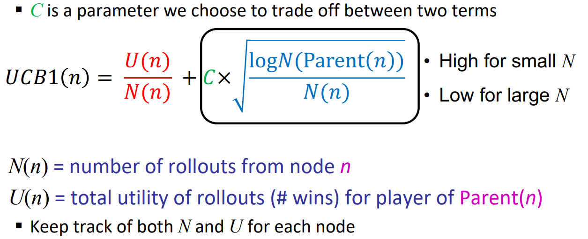
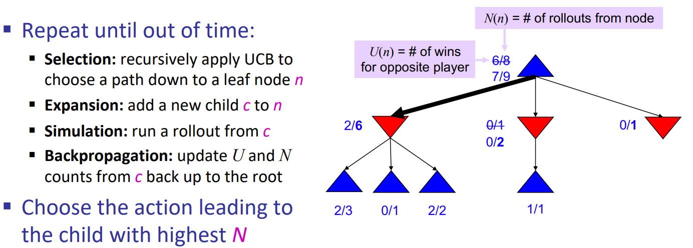

Games
Adversarial search problems, more commonly known as games.
Type of Games
- Deterministic or stochastic?
- One, two, or more players?
- Zero sum?
- Perfect information (can you see the state)?
Deterministic Games
One formalization:
- Initial state, s$_0$
- Players, Players(s) denote whose turn is
- Actions, Actions(s) available actions for the player
- Transition model Result(s,a)
- Terminal test, Terminal−test(s)
- Terminal values, Utility(s, player)
Solution for a player is a policy: S $\to$ A
Zero-Sum Games
- Agents have opposite utilities (values on outcomes)
- A single value that one maximizes and the other minimizes
- Adversarial, pure competition
Deterministic Zero-Sum Games
Game Tree
States and their transitions form a tree. Each state is a node on the tree, each transition is an edge on the tree.

Adversarial Game Tree
The rules of the game dictate that the two agents take turns making moves, leading to a game tree where the two agents switch off on layers of the tree that they “control”. An agent having control over a node means it’s their opportunity to decide upon an action and change the game state accordingly.

Adversarial Search (Minimax)
Compute each node’s minimax value: the best achievable utility against a rational (optimal) adversary

Minimax Efficiency
- Just like (exhaustive) DFS
- Time: $O(b^m)$
- Space: $O(bm)$
Optimization
Alpha-Beta Pruning
Idea: prune unnecessary searching process(suboptimal states)

Time complexity drops to $O(b^{m/2})$.
Limiting Depth
Depth-limited search
- Instead, search only to a limited depth in the tree
- Replace terminal utilities with an evaluation function for non-terminal positions
Guarantee of optimal play is gone.
Evaluation Functions
Ideal function: returns the actual minimax value of the position
In practice: typically weighted linear sum of features:
Each $f_i(s)$ corresponds to a feature extracted from the input state s, e.g. $f_1(s)$=(num white queens – num black queens)
Expectimax Search
Minimax optimally respound against an optimal opponent. However it’s often overly pessimistic in situations where optimal responses to an agent’s actions are not guaranteed.
In this case, we use average outcome to replace minimum outcome.
Expectimax search: compute the average score under optimal play.
- Chance nodes replace min nodes in minimax search.
- The outcome of chance nodes are uncertain.
- Calculate their expected utilities.
Pseudocode

About Prune
We should calculate the average outcome of a chance node, so we must iterate over all its successors to get the expected outcome. So we cannot prune in expectimax search.
Mixed Layer Game
Minimax and expectimax call for alternating maximizer/minimizer nodes and maximizer/chance nodes respectively. But in reality, many games doesn’t follow this pattern.
Indeed, we can add any layers(maybe with different type) to the search tree.

Monte Carlo Tree Search(MCTS)
When the tree becomes bigger, the time complexity of our search algorithm rapidly increases. We need overcome resource limits with randomization.
Monte Carlo Tree Search(MCTS) combines two important ideas:
- Evaluation by rollouts: From state s play many times using a policy (e.g. random) and count wins/losses.
- Selective search: explore parts of the tree, without constraints on the horizon, that will improve decision at the root.
Example
Strategy 1
Do N rollouts from each child of the root, record fraction of wins.
Pick the move that gives the best outcome by this metric.
Problem: best node it might become clear after a few simulations that a certain action does not
return many wins and thus we might choose to allocate this computational effort in doing more simulations for the other actions.
Strategy 2
Allocate rollouts to more promising nodes(with higher win rate).
Strategy 3
Allocate rollouts to more uncertain nodes(with fewer tests).
When some actions yield similar percentages of wins but one of them has used much fewer simulations to estimate that percentage. In this case the estimate of the action that used fewer simulations will have higher variance and hence we might want to allocate a few more simulations to that action to be more confident about the true percentage of wins.
UCB Algorithm
UCB1 formula combines “promising” and “uncertain”:

MCTS Algorithm

MCTS is currently the most common tool for solving hard search problems.
As $N\to +\infty$ UCT selects the minimax move.
MCTS can be improved further with machine learning.
General Games
- None-zero-sum games.
- Multi-agent utilities.
- Suboptimal agents.
- ……
Add layers to the search tree.
Summary
In deterministic zero-sum games, two primary algorithms were considered:
- Minimax: Used when our opponent(s) behaves optimally. Can be optimized using $\alpha-\beta$ pruning.
- Expectimax: Used when we facing a suboptimal opponent(s).
In most cases, it’s too computationally expensive to run the above algorithms to terminate nodes, so we use evaluation functions to terminate early.
For problems with large branching factors we described the MCTS and UCT algorithms.
If you like this blog or find it useful for you, you are welcome to comment on it. You are also welcome to share this blog, so that more people can participate in it. If the images used in the blog infringe your copyright, please contact the author to delete them. Thank you !